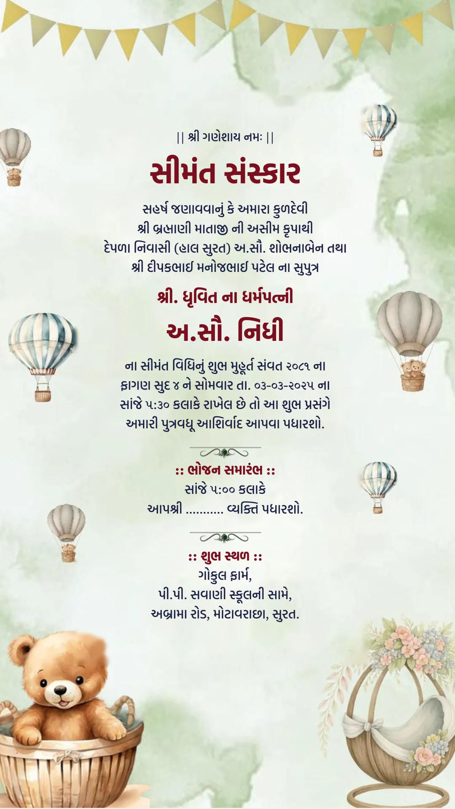

Designs › Baby Shower (Simant) › Teddy Balloon Simant
Teddy Balloon Simant: two-page Gujarati baby shower card

- Ceremony: Baby Shower (Simant)
- Language: Gujarati
- God or sacred symbol: Lord Ganesha, Brahmani Mataji
- Format: WhatsApp image (1080 x 1920 px) and 5 x 7 inch print PDF
- Pages: 2 (welcome cover, full invitation with bhojan and venue)
About this design
Teddy Balloon is a two-page simant card in soft green watercolour, copied from a printed Gujarati card. Yellow bunting runs along the top of both pages, striped hot air balloons float down the sides, and the bottom corners hold a teddy bear in a wicker basket and a cradle trimmed with flowers.
The cover is a simple welcome: સીમંત સંસ્કાર in two staggered lines, the family name and આપનું હાર્દિક સ્વાગત કરે છે. The second page carries the full invitation.
Text is set in Hind Vadodara in maroon and navy. It is the most playful card in the set and has no painted god, which suits families who want a nursery look with only a typed Ganesha line and kuldevi. The sample names Brahmani Mataji; change it to your own.
All 2 pages
The cover is shown above. These are the other pages exactly as the card opens in the editor, with the sample family names.

Sample wording on this card
Both pages open with શ્રી ગણેશાય નમઃ. Page 2 names the kuldevi, the husband's native village and parents, the couple, and the muhurat in Samvat with the date and time, then ભોજન સમારંભ with a blank for the number of guests, and the શુભ સ્થળ. Replace every name, date and address with your own before you share it. The card can also be switched to English, Hindi, Marathi, Punjabi or Tamil in the editor, with the same pages and artwork.